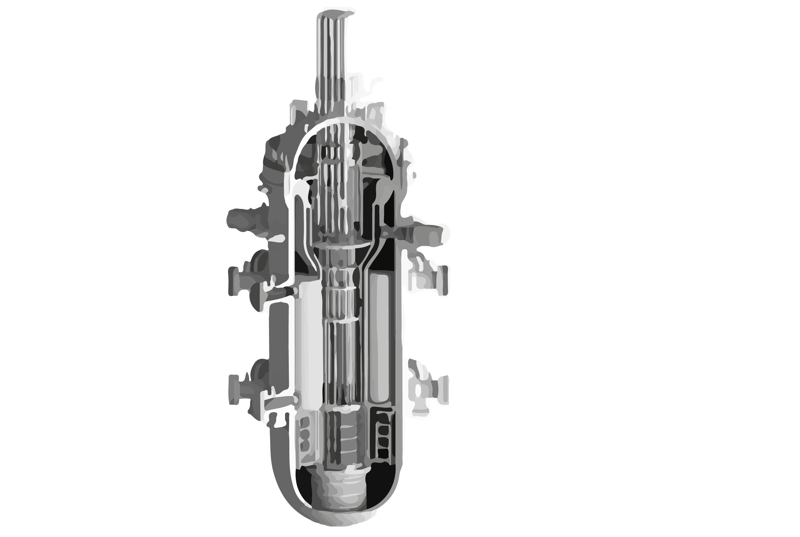
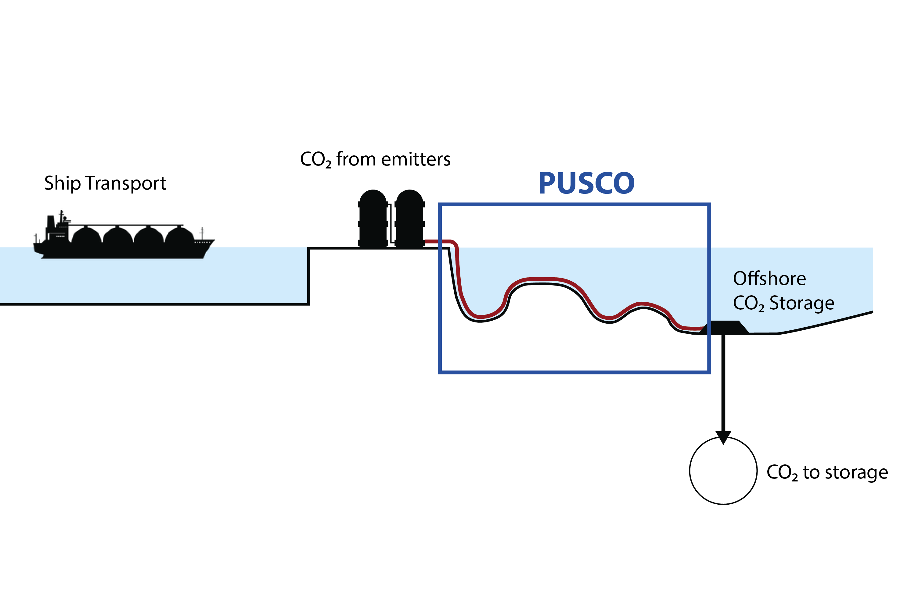

ThermoSMR (2024-2028)
Title: Nuclear thermo-hydraulic of SMRs
Partner: MFTE Lab, Inha University, South Korea
Description: In this project, we focus on studying two phase flow instabilities under diferent operational scenarios related to the operation and accidents scenarios of Small Modular Reactors (SMRs); and the influence of the instabilites on the heat transfer mechanisms. The project involves experimental studies at the Two-Phase Flow Instability facility at NTNU and at the Two-Phase Flow Condensation Instability facility at Inha University.
Contact: Carlos A. Dorao, Maria Fernandino, Il-Woong Park (MFTE Lab, Inha University)

PUSCO (2022-2025)
Title: Phenomenological study of unstable two-phase CO2 flow in a pipeline system
Financed by: Equinor ASA, Total E&P NORGE AS, GASCO AS
Partners: SINTEF Energy AS, IFE AS
Description: CO2 pipelines are the critical element linking CO2 capture and storage and it might be the weakest link in some future projects. Recently, it has been acknowledged that the understanding about CO2 pipelines operating in two-phase flow conditions is far from satisfactory to address the mentioned global challenge. The primary objetive of this project is to establish a physical understanding on the occurrence of two-phase flow instabilities related to the CO2 pipeline systems.
Contact: Maria Fernandino

Cardio exosomes (2020-2023)
Title: Biomedical engineering platform for cardio exosomes
Financed by: NTNU Health (NTNU Helse)
Description: Despite the extraordinary potential of the exosomes in protecting the heart, no optimal way to isolate and purify exosomes for characterization and especially for clinical utilization does exist. This project in biomedical engineering will revert this situation by combining nanotechnology, fluid mechanics, biotechnology, physics-based computational modeling and medicine for developing an exosome separation, purification, analysis and treatment platform. The platform will be evaluated by studying exosome purification in fluids from animal hearts and cell cultures, and by the use of the exosome-based material for treatment in of ischemic patients.
Contact: Carlos Dorao, Morten A. Høydal (Dept. of Circulation and Medical Imaging, Faculty of Medicine, NTNU)

DynDrops (2018-2023)
Title: Mechanisms controlling droplet growth dynamics during condensation on micro-patterned surfaces
Financed by: ToppForsk program (FRIPRO), Research Council of Norway (NFR), Faculty of Engineering together with Department of Energy and Process Engineering, NTNU
Description: Dropwise condensation is of relevance for several applications such as water harvesting, desalination, liquefaction and thermal management. Understanding droplet formation, growth and droplet dynamics on different surfaces is essential to be able to desing surfaces capable of maintaining the dropwise condensation regime for long periods of time. Available exprimental techniques cannot always access the smallest physical scales governing the process. In this project, numerical modeling is used to describe the evolution of droplets during dropwsise condensation and aid in the understanding of the process.
Contact: Maria Fernandino
Heat transfer mechanisms in two-phase flows (2018-2021)
Title: Identifying the dominant heat transfer mechanism during two-phase flows.
Financed by: FRINATEK program (FRIPRO), Research Council of Norway (NFR).
Description: The cooling effect in a refrigerator is achieved by a cycle of condensation and vaporization of the refrigerant fluid occurring in heat exchangers consisting of tubes or channels ranging from decades of microns to millimetres in diameter. The design and optimization of such systems depend on accurate models. However, the incomplete understanding of the governing physical mechanisms during phase change heat transfer processes, namely evaporation and condensation, has restricted the development of satisfactory theoretical based models giving rise to a large number of empirically based models with limited application. The focus of this project is to identify the dominant heat transfer mechanisms during boiling and condensation.
Contact: Carlos Dorao
Boiling of fluid mixtures (2013-2019)
Title: Boiling of multicomponent mixtures in confined geometries.
Financed by: FRINATEK program (FRIPRO), Research Council of Norway (NFR).
Description: Flow boiling is an efficient heat transfer mechanism and as such it is the main choice when it comes to the high heat fluxes encountered in miniaturized process equipment such as micro- and mini-heat exchangers, micro-reactors and fuel cells. The development of two-phase micro-channel technology requires a thorough understanding of the hydrodynamic and thermal behaviour of two-phase flow in such confined geometries. This project focuses on the study of bubble dynamics inside small diameter channels during boiling of refrigerants.
Contact: Maria Fernandino
Two phase flow instabilities (2008-2012)
Title: Thermo-hydraulic flow instabilities in LNG process units.
Financed by: Statoil ASA.
Description: Thermally induced two-phase flow instability is of interest in the design and operation of many industrial systems and equipment, such as steam generators, boiling water nuclear reactors, heat exchangers, thermosiphons, reboilers, refrigeration plants and some chemical processing systems. Flow instabilities are undesirable since they can be the cause of mechanical vibrations, problems of system control and disturbance of heat transfer in certain areas of the equipment. The objective of the project is to improve fundamental understanding of cryogenic thermo-hydraulic flow instabilities related to LNG process units.